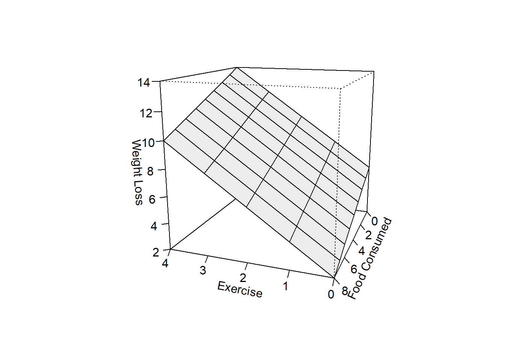
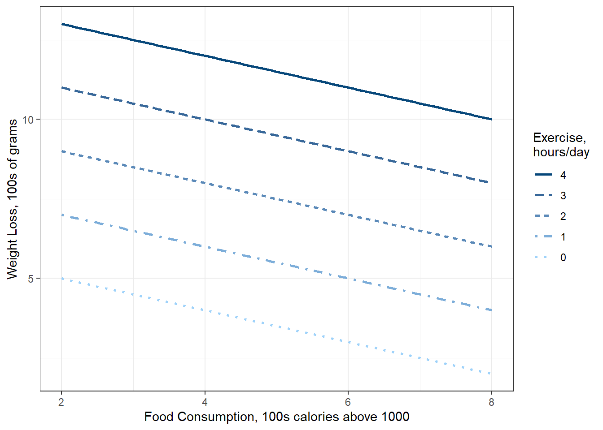
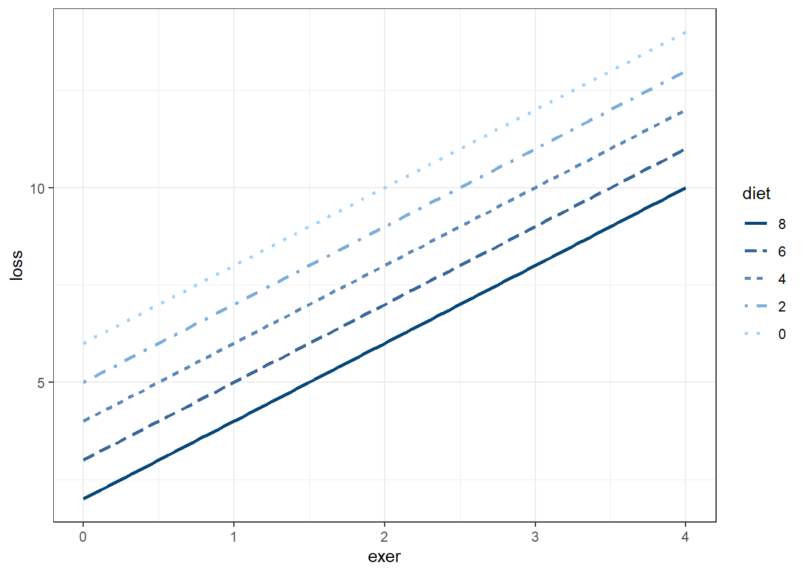

3 Multiple Regression: “Weight Loss”
Darlington & Hayes, Chapter 3’s first example
Darlington, Richard B., and Andrew F. Hayes. Regression Analysis and Linear Models : Concepts, Applications, and Implementation, Guilford Publications, 2016. ProQuest Ebook Central, http://ebookcentral.proquest.com/lib/usu/detail.action?docID=4652287. Created from usu on 2025-01-29 01:13:21.
Outside resource * https://www.harshaash.com/R/part-and-partial-corr/ * https://dstanley4.github.io/psyc4780bookdown/multiple-regression.html
Reference:
- Knapp, T. R. (1996). Semi-Partial Correlations: I Don’t Need Them; You Can Have Them. Mid-Western Educational Researcher, 9(4), 4.
# library(remotes)
# remotes::install_github("sarbearschwartz/apaSupp")
library(tidyverse)
library(flextable)
library(apaSupp)
library(olsrr)
library(modelsummary)
library(parameters)
library(effectsize)
library(interactions)
library(performance)
library(ggResidpanel)3.1 PURPOSE
3.1.2 Data Description
Suppose you conducted a study examining the relationship between food consumption and weight loss among people enrolled (n = 10) in a month-long healthy living class.
exeraverage weekly hours of exercisedietaverage daily food consumption (in 100s of calories about the recommended minimum of 1,000 calories required to maintain good health)lossaverage weight loss in hundreds of grams per week
Manually enter the data set provided on page 44 in Table 3.1
df_loss <- tibble::tribble(~id, ~exer, ~diet, ~meta, ~loss,
1, 0, 2, 15, 6,
2, 0, 4, 14, 2,
3, 0, 6, 19, 4,
4, 2, 2, 15, 8,
5, 2, 4, 21, 9,
6, 2, 6, 23, 8,
7, 2, 8, 21, 5,
8, 4, 4, 22, 11,
9, 4, 6, 24, 13,
10, 4, 8, 26, 9)df_loss %>%
dplyr::select("ID" = id,
"Exercise\nFrequency" = exer,
"Food\nIntake" = diet,
"Weight\nLoss" = loss) %>%
flextable::flextable() %>%
apaSupp::theme_apa(caption = "D&H Table 3.1: Exercise, Food Intake, and Weight Loss") %>%
flextable::colformat_double(digits = 0) %>%
flextable::footnote(part = "header",
i = 1, j = 2:4,
value = as_paragraph(c("Weekly average of hours/day",
"Daily average of 100s of calories above recommendation",
"Weekly average of 100s of grams/week")))ID | Exercise | Food | Weight |
|---|---|---|---|
1 | 0 | 2 | 6 |
2 | 0 | 4 | 2 |
3 | 0 | 6 | 4 |
4 | 2 | 2 | 8 |
5 | 2 | 4 | 9 |
6 | 2 | 6 | 8 |
7 | 2 | 8 | 5 |
8 | 4 | 4 | 11 |
9 | 4 | 6 | 13 |
10 | 4 | 8 | 9 |
1Weekly average of hours/day | |||
2Daily average of 100s of calories above recommendation | |||
3Weekly average of 100s of grams/week | |||
3.2 EXPLORATORY DATA ANALYSIS
3.2.1 Summary Statistics
df_loss %>%
dplyr::select("Exercise Frequency" = exer,
"Food Intake" = diet,
"Weight Loss" = loss,
"Metabolic Rate" = meta) %>%
apaSupp::tab_desc(caption = "Summary Statistics") %>%
flextable::footnote(i = 1:3, j = 1,
value = as_paragraph(c("Weekly average of hours/day",
"Daily average of 100s of calories above recommendation",
"Weekly average of 100s of grams/week")))Measure | NA | M | SD | min | Q1 | Mdn | Q3 | max |
|---|---|---|---|---|---|---|---|---|
Exercise Frequency1 | 0 | 2.00 | 1.63 | 0.00 | 0.50 | 2.00 | 3.50 | 4.00 |
Food Intake2 | 0 | 5.00 | 2.16 | 2.00 | 4.00 | 5.00 | 6.00 | 8.00 |
Weight Loss3 | 0 | 7.50 | 3.31 | 2.00 | 5.25 | 8.00 | 9.00 | 13.00 |
Metabolic Rate | 0 | 20.00 | 4.14 | 14.00 | 16.00 | 21.00 | 22.75 | 26.00 |
Note. NA = not available or missing. Mdn = median. Q1 = 25th percentile, Q3 = 75th percentile. N = 10. | ||||||||
1Weekly average of hours/day | ||||||||
2Daily average of 100s of calories above recommendation | ||||||||
3Weekly average of 100s of grams/week | ||||||||
3.2.2 Correlation
df_loss %>%
dplyr::select("Exercise Frequency" = exer,
"Food Intake" = diet,
"Weight Loss" = loss) %>%
apaSupp::tab_cor(caption = "Correlations")Variables | r | p | ||
|---|---|---|---|---|
Exercise Frequency | Food Intake | 0.380 | .282 | |
Exercise Frequency | Weight Loss | 0.860 | .001 | ** |
Food Intake | Weight Loss | 0.047 | .898 | |
Note. r = Pearson's Product-Moment correlation coefficient. N = 10. | ||||
* p < .05. ** p < .01. *** p < .001. | ||||
3.2.3 Visualizations

Figure 3.1: D&H Figure 3.1 (page 45) An example with positive simple association and negative partial association - BASIC
df_loss %>%
ggplot(aes(x = diet,
y = loss)) +
geom_point(aes(shape = factor(exer),
color = factor(exer)),
size = 3) +
theme_bw() +
labs(x = "Observed Food Intake\nDaily average of 100s of calories above recommendation",
y = "Observed Weight Loss\nWeekly average of 100s of grams/week",
shape = "Exercise Frequency\nWeekly average of hours/day",
color = "Exercise Frequency\nWeekly average of hours/day") +
theme(legend.position = "bottom")
Figure 3.2: D&H Figure 3.1 (page 45) An example with positive simple association and negative partial association - BETTTER
df_loss %>%
dplyr::mutate(exer = factor(exer)) %>%
ggplot(aes(x = diet,
y = loss)) +
geom_point(size = 3) +
theme_bw() +
labs(x = "Observed Food Intake\n(Daily average of 100s of calories above recommendation)",
y = "Observed Weight Loss\n(Weekly average of 100s of grams/week)",
shape = "Exercise Frequency\n(Weekly average of hours/day)",
color = "Exercise Frequency\n(Weekly average of hours/day)") +
theme(legend.position = "bottom") +
geom_smooth(aes(group = 1),
method = "lm",
formula = y ~ x,
se = FALSE)
Figure 3.3: D&H Figure 3.1 (page 45) An example with positive simple association and negative partial association - WORST
df_loss %>%
dplyr::mutate(exer = factor(exer)) %>%
ggplot(aes(x = diet,
y = loss,
group = exer)) +
geom_point(aes(shape = exer,
color = exer),
size = 3) +
theme_bw() +
labs(x = "Observed Food Intake\n(Daily average of 100s of calories above recommendation)",
y = "Observed Weight Loss\n(Weekly average of 100s of grams/week)",
shape = "Exercise Frequency\n(Weekly average of hours/day)",
color = "Exercise Frequency\n(Weekly average of hours/day)") +
theme(legend.position = "bottom") +
geom_smooth(aes(color = exer),
method = "lm",
formula = y ~ x,
se = FALSE)
Figure 3.4: D&H Figure 3.1 (page 45) An example with positive simple association and negative partial association - BEST
3.3 REGRESSION ANALYSIS
3.3.1 Fit the models
- The dependent variable (DV) is weight loss (\(Y\))
- The independent variables (IVs) are exercise and diet (\(X\))
3.3.2 Output
Model Summary
--------------------------------------------------------------
R 0.864 RMSE 1.581
R-Squared 0.746 MSE 2.500
Adj. R-Squared 0.714 Coef. Var 23.570
Pred R-Squared 0.585 AIC 43.542
MAE 1.300 SBC 44.449
--------------------------------------------------------------
RMSE: Root Mean Square Error
MSE: Mean Square Error
MAE: Mean Absolute Error
AIC: Akaike Information Criteria
SBC: Schwarz Bayesian Criteria
ANOVA
------------------------------------------------------------------
Sum of
Squares DF Mean Square F Sig.
------------------------------------------------------------------
Regression 73.500 1 73.500 23.52 0.0013
Residual 25.000 8 3.125
Total 98.500 9
------------------------------------------------------------------
Parameter Estimates
------------------------------------------------------------------------------------
model Beta Std. Error Std. Beta t Sig lower upper
------------------------------------------------------------------------------------
(Intercept) 4.000 0.913 4.382 0.002 1.895 6.105
exer 1.750 0.361 0.864 4.850 0.001 0.918 2.582
------------------------------------------------------------------------------------ Model Summary
---------------------------------------------------------------
R 0.047 RMSE 3.135
R-Squared 0.002 MSE 9.829
Adj. R-Squared -0.123 Coef. Var 46.735
Pred R-Squared -0.393 AIC 57.232
MAE 2.600 SBC 58.139
---------------------------------------------------------------
RMSE: Root Mean Square Error
MSE: Mean Square Error
MAE: Mean Absolute Error
AIC: Akaike Information Criteria
SBC: Schwarz Bayesian Criteria
ANOVA
-----------------------------------------------------------------
Sum of
Squares DF Mean Square F Sig.
-----------------------------------------------------------------
Regression 0.214 1 0.214 0.017 0.8982
Residual 98.286 8 12.286
Total 98.500 9
-----------------------------------------------------------------
Parameter Estimates
--------------------------------------------------------------------------------------
model Beta Std. Error Std. Beta t Sig lower upper
--------------------------------------------------------------------------------------
(Intercept) 7.143 2.923 2.444 0.040 0.403 13.882
diet 0.071 0.541 0.047 0.132 0.898 -1.176 1.319
-------------------------------------------------------------------------------------- Model Summary
--------------------------------------------------------------
R 0.915 RMSE 1.265
R-Squared 0.838 MSE 1.600
Adj. R-Squared 0.791 Coef. Var 20.158
Pred R-Squared 0.669 AIC 41.079
MAE 1.200 SBC 42.289
--------------------------------------------------------------
RMSE: Root Mean Square Error
MSE: Mean Square Error
MAE: Mean Absolute Error
AIC: Akaike Information Criteria
SBC: Schwarz Bayesian Criteria
ANOVA
------------------------------------------------------------------
Sum of
Squares DF Mean Square F Sig.
------------------------------------------------------------------
Regression 82.500 2 41.250 18.047 0.0017
Residual 16.000 7 2.286
Total 98.500 9
------------------------------------------------------------------
Parameter Estimates
---------------------------------------------------------------------------------------
model Beta Std. Error Std. Beta t Sig lower upper
---------------------------------------------------------------------------------------
(Intercept) 6.000 1.275 4.706 0.002 2.985 9.015
exer 2.000 0.333 0.987 6.000 0.001 1.212 2.788
diet -0.500 0.252 -0.326 -1.984 0.088 -1.096 0.096
--------------------------------------------------------------------------------------- Model Summary
--------------------------------------------------------------
R 0.963 RMSE 0.842
R-Squared 0.928 MSE 0.709
Adj. R-Squared 0.892 Coef. Var 14.495
Pred R-Squared 0.836 AIC 34.941
MAE 0.655 SBC 36.454
--------------------------------------------------------------
RMSE: Root Mean Square Error
MSE: Mean Square Error
MAE: Mean Absolute Error
AIC: Akaike Information Criteria
SBC: Schwarz Bayesian Criteria
ANOVA
------------------------------------------------------------------
Sum of
Squares DF Mean Square F Sig.
------------------------------------------------------------------
Regression 91.409 3 30.470 25.782 8e-04
Residual 7.091 6 1.182
Total 98.500 9
------------------------------------------------------------------
Parameter Estimates
----------------------------------------------------------------------------------------
model Beta Std. Error Std. Beta t Sig lower upper
----------------------------------------------------------------------------------------
(Intercept) -1.636 2.928 -0.559 0.597 -8.802 5.529
exer 1.045 0.422 0.516 2.476 0.048 0.012 2.079
diet -1.136 0.294 -0.742 -3.863 0.008 -1.856 -0.417
meta 0.636 0.232 0.796 2.746 0.033 0.069 1.203
----------------------------------------------------------------------------------------3.3.3 Equations
$$ = 4 + 1.75(exercise) \
= 7.14 + 0.07(food) \
= 6 + 2(exercise) -0.5(food) \
= -1.636 + 1.045(exercise) -1.136(food) + 0.636(metabolism)\ $$
3.3.4 Tables
list("Just\nExercise" = fit_lm_exer,
"Just\nDiet" = fit_lm_diet,
"Exercise\nand Diet" = fit_lm_both,
"Add\nMetabolism" = fit_lm_three) %>%
modelsummary::modelsummary(output = "flextable",
fmt = 2,
estimate = "{estimate}",
statistic = NULL,
gof_map = NA,
coef_rename = c("exer" = "Exercise Frequency",
"diet" = "Food Intake",
"meta" = "Metabolism")) %>%
apaSupp::theme_apa(caption = "Parameter Estimates for Weight Loss Regressed on Exercise Frequency and Food Intake - BASIC")
| Just | Just | Exercise | Add |
|---|---|---|---|---|
(Intercept) | 4.00 | 7.14 | 6.00 | -1.64 |
Exercise Frequency | 1.75 | 2.00 | 1.05 | |
Food Intake | 0.07 | -0.50 | -1.14 | |
Metabolism | 0.64 |
tab_mods <- list("Just Exercise" = fit_lm_exer,
"Just Diet" = fit_lm_diet,
"Exercise\nand Diet" = fit_lm_both,
"Add\nMetabolism" = fit_lm_three) %>%
modelsummary::modelsummary(output = "flextable",
fmt = 2,
estimate = "{estimate} ({std.error})",
statistic = "{p.value}{stars}",
stars = c('*' = .05, '**' = .01, '***' = .001),
gof_map = c("r.squared",
#"adj.r.squared",
"rmse"),
coef_rename = c("exer" = "Exercise Frequency",
"diet" = "Food Intake",
"meta" = "Metabolism")) %>%
apaSupp::theme_apa(caption = "Parameter Estimates for Weight Loss Regressed on Exercise Frequency and Food Intake - BETTER",
p_note = "apa",
general_note = "Dependent variable is average weekly weight lost in 100s of grams. ") %>%
flextable::hline(i = 8) %>%
flextable::footnote(i = c(3, 5, 7), j = 1,
value = as_paragraph(c("Weekly average of hours/day",
"Rate",
"Daily average of 100s of calories above recommendation")))
tab_mods
| Just Exercise | Just Diet | Exercise | Add |
|---|---|---|---|---|
(Intercept) | 4.00 (0.91) | 7.14 (2.92) | 6.00 (1.27) | -1.64 (2.93) |
<0.01** | 0.04* | <0.01** | 0.60 | |
Exercise Frequency1 | 1.75 (0.36) | 2.00 (0.33) | 1.05 (0.42) | |
<0.01** | <0.01*** | 0.05* | ||
Food Intake2 | 0.07 (0.54) | -0.50 (0.25) | -1.14 (0.29) | |
0.90 | 0.09 | <0.01** | ||
Metabolism3 | 0.64 (0.23) | |||
0.03* | ||||
R2 | 0.746 | 0.002 | 0.838 | 0.928 |
RMSE | 1.58 | 3.14 | 1.26 | 0.84 |
Note. Dependent variable is average weekly weight lost in 100s of grams. | ||||
* p < .05. ** p < .01. *** p < .001. | ||||
1Weekly average of hours/day | ||||
2Rate | ||||
3Daily average of 100s of calories above recommendation | ||||
modelsummary::modelsummary(models = list("Weight Loss" = fit_lm_both),
output = "flextable",
fmt = 2,
coef_rename = c("exer" = "Exercise Frequency",
"diet" = "Food Intake")) %>%
apaSupp::theme_apa(caption = "Parameter Estimates for Weight Loss Regressed on Exercise Frequency and Food Intake - BETTER",
p_note = "apa",
general_note = "Dependent variable is average weekly weight lost in 100s of grams. ") %>%
flextable::hline(i = 6) %>%
flextable::footnote(i = c(3, 5), j = 1,
value = as_paragraph(c("Weekly average of hours/day",
"Daily average of 100s of calories above recommendation")))
| Weight Loss |
|---|---|
(Intercept) | 6.00 |
(1.27) | |
Exercise Frequency1 | 2.00 |
(0.33) | |
Food Intake2 | -0.50 |
(0.25) | |
Num.Obs. | 10 |
R2 | 0.838 |
R2 Adj. | 0.791 |
AIC | 41.1 |
BIC | 42.3 |
Log.Lik. | -16.539 |
F | 18.047 |
RMSE | 1.26 |
Note. Dependent variable is average weekly weight lost in 100s of grams. | |
* p < .05. ** p < .01. *** p < .001. | |
1Weekly average of hours/day | |
2Daily average of 100s of calories above recommendation | |
3.3.5 Visualization
eq <- function(x, y){6 + 2*x -.5 *y}
xlims <- 0:4
ylims <- 0:8
persp(x = xlims,
y = ylims,
z = outer(xlims, ylims, eq),
xlab = "Exercise",
ylab = "Food Consumed",
zlab = "Weight Loss",
shade = .3,
theta = 200,
phi = 15,
r = 5,
d = .5,
ticktype = 'detailed')
interactions::interact_plot(model = fit_lm_both,
pred = diet,
modx = exer,
modx.values = 0:4,
x.label = "Food Consumption, 100s calories above 1000",
y.label = "Weight Loss, 100s of grams",
legend.main = "Exercise,\nhours/day") +
theme_bw() 
interactions::interact_plot(model = fit_lm_both,
pred = exer,
modx = diet,
modx.values = c(2, 4, 6, 8),
x.label = "Daily Exercise, hours",
y.label = "Weight Loss, 100s of grams",
legend.main = "Food Consumption\n100s calories") +
theme_bw() 
interactions::interact_plot(model = fit_lm_three,
pred = exer,
modx = diet,
mod2 = meta,
modx.values = c(8, 5, 2),
modx.labels = c("1800 cal",
"1500 cal",
"1200 cal"),
mod2.values = c(16, 22.75),
mod2.labels = c("Low Metabolic Rate\n(Q1 = 16.00)",
"High Metabolic Rate\n(Q3 = 22.75)"),
x.label = "Daily Exercise, hours",
y.label = "Weight Loss, grams/week",
legend.main = "Food Consumption") +
theme_bw() +
theme(legend.position = c(0, 1),
legend.justification = c(-0.1, 1.1),
legend.background = element_rect(color = "black"),
legend.key.width = unit(2, "cm")) +
scale_y_continuous(breaks = c(0, 5, 10, 15),
labels = c(0, 500, 1000, 1500))
3.4 EFFECT SIZES
3.4.1 Semipartial Correlation
Unique contribution
# A tibble: 2 × 5
Term r2_semipartial CI CI_low CI_high
<chr> <dbl> <dbl> <dbl> <dbl>
1 exer 0.835 0.95 0.675 1
2 diet 0.0914 0.95 0 1# A tibble: 3 × 5
Term r2_semipartial CI CI_low CI_high
<chr> <dbl> <dbl> <dbl> <dbl>
1 exer 0.0735 0.95 0.000735 1
2 diet 0.179 0.95 0.00179 1
3 meta 0.0904 0.95 0.000904 13.4.2 Eta Squared
# A tibble: 2 × 5
Parameter Eta2 CI CI_low CI_high
<chr> <dbl> <dbl> <dbl> <dbl>
1 exer 0.746 0.95 0.336 1
2 diet 0.0914 0.95 0 1# A tibble: 3 × 5
Parameter Eta2 CI CI_low CI_high
<chr> <dbl> <dbl> <dbl> <dbl>
1 exer 0.746 0.95 0.284 1
2 diet 0.0914 0.95 0 1
3 meta 0.0904 0.95 0 1# A tibble: 2 × 5
Parameter Eta2_partial CI CI_low CI_high
<chr> <dbl> <dbl> <dbl> <dbl>
1 exer 0.821 0.95 0.494 1
2 diet 0.36 0.95 0 1# A tibble: 3 × 5
Parameter Eta2_partial CI CI_low CI_high
<chr> <dbl> <dbl> <dbl> <dbl>
1 exer 0.912 0.95 0.699 1
2 diet 0.559 0.95 0.0445 1
3 meta 0.557 0.95 0.0425 13.4.3 Standardized Regression Coefficients
# A tibble: 3 × 5
Parameter Std_Coefficient CI CI_low CI_high
<chr> <dbl> <dbl> <dbl> <dbl>
1 (Intercept) 8.24e-17 0.95 -0.342 0.342
2 exer 9.87e- 1 0.95 0.598 1.38
3 diet -3.26e- 1 0.95 -0.716 0.0626# A tibble: 4 × 5
Parameter Std_Coefficient CI CI_low CI_high
<chr> <dbl> <dbl> <dbl> <dbl>
1 (Intercept) 1.65e-16 0.95 -0.254 0.254
2 exer 5.16e- 1 0.95 0.00601 1.03
3 diet -7.42e- 1 0.95 -1.21 -0.272
4 meta 7.96e- 1 0.95 0.0866 1.50 3.5 VARIANCE INFLATION FACTORS
exer diet
1.166667 1.166667 exer diet meta
3.621212 3.075758 7.000000 3.6 CONCLUSION: SPECIFIC QUESTIONS
(Intercept) exer diet
6.0 2.0 -0.5 2.5 % 97.5 %
(Intercept) 2.985316 9.01468433
exer 1.211792 2.78820808
diet -1.095829 0.09582931\[ \widehat{loss} = 6 + 2(exercise) -0.5(food) \]
Suppose an examination of the literature on diet, exercise, and weight loss led you to the following conclusions:
- People who eat the minimum number of calories to maintain good health and who do not exercise at all will lose how much?
exer diet emmean SE df lower.CL upper.CL
0 0 6 1.27 7 2.99 9.01
Confidence level used: 0.95 The estimated marginal mean weight loss is 600 grams per week among thoes who eat the minimum number of calories to maintain good health and who do not exercise at, b = 6.00, 95% CI = [2.99, 9.01].
- If food intake is held constant, then each 1 hour of average daily exercise leads to how much more weight loss?
exer diet emmean SE df lower.CL upper.CL
0 5 3.5 0.820 7 1.56 5.44
1 5 5.5 0.583 7 4.12 6.88
2 5 7.5 0.478 7 6.37 8.63
3 5 9.5 0.583 7 8.12 10.88
4 5 11.5 0.820 7 9.56 13.44
Confidence level used: 0.95 Holding food consumption constant, each additional hour of daily exercise is associated with 200 grams additional weight lost per week, b = 2.00, 95% CI = [1.21, 2.79].
- If exercise is held constant, then each one unit of food intake per day (i.e., 100 calories) above the minimum to maintain good health translates to much weight gain?
diet emmean SE df lower.CL upper.CL
0 10.0 1.348 7 6.81 13.19
1 9.5 1.116 7 6.86 12.14
2 9.0 0.894 7 6.89 11.11
3 8.5 0.695 7 6.86 10.14
4 8.0 0.540 7 6.72 9.28
Confidence level used: 0.95 Holding exercise constant, each additional 100 calories of food consumed daily is associated with 50 grams weight gained per week, b = -0.50, 95% CI = [1.21, 2.79].
- If a person exercises 2 hours per week and eats 600 more calories than the minimum, how much weight would they loose weekly on average?
exer diet emmean SE df lower.CL upper.CL
2 6 7 0.54 7 5.72 8.28
Confidence level used: 0.95 On average, 700 grams were lost per week amonth participants who exrcised 2 hours a week and consumed 6,600 more calories, 95% CI [572, 828].